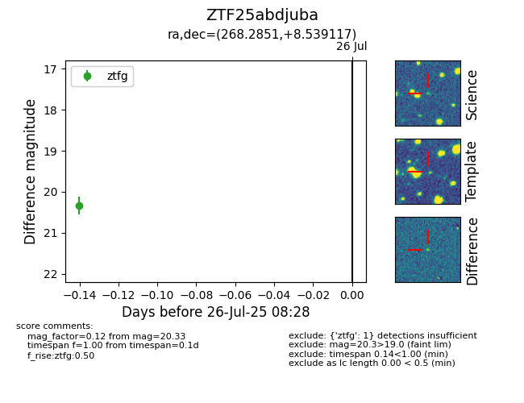

Target ZTF25abdjuba at 2025-07-26 08:28, see:
FINK: fink-portal.org/ZTF25abdjuba
Lasair: lasair-ztf.lsst.ac.uk/objects/ZTF25abdjuba
ALeRCE: alerce.online/object/ZTF25abdjuba
alt names
ZTF25abdjuba (ztf,fink)
coordinates:
equatorial (ra, dec) = (268.2851,+8.53912)
galactic (l, b) = (34.0500,+16.80875)
photometry
last ztfg=20.33
1 ztfg detections
